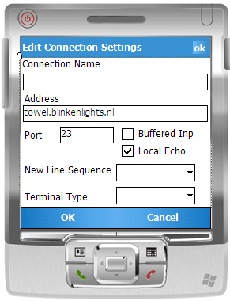

Title: Windows Mobile Telnet Client Author: Joel Ivory Johnson Email: joel@j2i.net Member ID: 621517 Language: C++ Platform: Windows Mobile 5.0, .Net Compact Framework 2.0 Technology: .Net Level: Intermediate Description: Implementation of telnet client for Windows Mobile 5 devices

In present day time I see telnet primarily used as a diagnostic tool for HTTP, SMTP, and other protocols. I often use it myself in diagnosing server problems. Lately I’ve found my phone to be an idea device for using telnet for these purposes because it can easily connect to the local network for test as well as using its only internet connection to connect to a server from a point outside the local network.
The client was quickly and easily written in less than a day using C# and the .Net Compact Framework. Within this document I’ll highlight the most important parts of creating the client.
I have targeted a Windows Mobile 5 Professional device when writing this application. I’ve tested the program on both the HTC Wizard (branded Cingular 8125) and an iPaq 4705. I attempted to run the program on a Motorola Q but was unable to track down a thread related exception that occurred (unfortunately this exception would cause Visual Studio to also close). So for now I believe this program will not yet run on devices with no touch screen . To run this program your device must have the 2.0 Compact Framework. If it is not installed Visual Studio will install the framework to your device if you allow Visual Studio to debug the program on your Windows Mobile 5 device.
The UI was designed to be capable of being displayed on a device with 240x240 resolution but should really be run on a device with at least 320x240 resolution. Ideally it should be run on a VGA resolution device if the partially implemented Terminal Emulator feature is used.
.Net allows this program to be run on several types of devices. Unfortunately I found that not all features of the .Net 2.0 Framework are supported on all devices that run the framework. This is further complicated by the fact that the IDE will not generate errors when you use unsupported features (and I can’t realistically expect it to since it can’t know all the features of all the devices on which it will be run).
An example of a feature that won’t work across all devices is the ToolBar control. This control will render fine on the desktop and on Windows Mobile 5 Professional devices but caused an “UInsupportedException” on the Moto Q. I also found that the “Save File Dialog” is not available on both platforms.
All of the code for establishing a telnet session can be found in the TelnetSession class. The main objects of interest in the class are instances of the Socket class and NetworkStream class. The creation of the socket is done in the CreateSocket method. This method takes as its arguments the address or host name of the target machine and the remote port number to use. The method resolves the IP address of the target machine and attempts to make a connection to it. If successful the socket created will be returned.
Socket CreateSocket(string machineAddress, int port)
{
//Resolve the IP address(es) of the target machine
IPHostEntry iphostEntry = null;
iphostEntry = Dns.GetHostEntry(machineAddress);
//let's go through the list of IP addresses returned and attempt
//to connect to each one. once a successful connection is made
//return the socket created from that connection and stop testing
//on any remaining ports. If no connection can be established then
//return null
foreach (IPAddress address in iphostEntry.AddressList)
{
IPEndPoint ipe = new IPEndPoint(address.Address, port);
Socket tempSocket = new Socket(ipe.AddressFamily,SocketType.Stream, ProtocolType.Tcp);
tempSocket.Connect(ipe);
if (tempSocket.Connected)
{
return tempSocket;
}
}
return null;
}
Once a socket is created a NetworkStream object is wrapped around it so that we have a stream interface to the socket. Then a StreamReader and StreamWriter are created which refer to the network stream and give us a natural way to interact with the connection.
Writing data to the connection is incredibly simple. Use the “Write” method on the StreamWriter object to send an array of bytes over the stream.
public void Send(byte[] message)
{
_writerStream.Write(message);
_writerStream.Flush();
}
Reading is a little more involved. While one could call the StreamReader.Read method this is undesirable since it will block a thread until the read buffer is full. If a server is returning a small amount of bytes a program could be stuck waiting for more bytes even if there are none. Because of the asynchronous nature of the connection we have no idea how many bytes are going to be received and when.
To resolve the issue of not knowing when data will be received a new thread is created that will wait for data to be received and trigger an event when data is available. Within the thread the DataAvailable property of the NetworkStream object is checked. If no data is available the thread will just sleep for a while. If data is available it is immediately read and converted to a string. This string is added to a queue and then the TelnetSession object send a notification through the BlockReceived event to inform subscribers that the data is available. The resulting strings are read through the ReadBlock method. Note that ReadBlock and return any number of lines of text.
The thread on which this occurs is marked as a background thread. This helps to ensure that the thread will be terminated when the main thread of the application terminates. Otherwise there would be the risk that the user closes the program but the program continues to run.
The program supports two ways of displaying information to the user. The first (And most simple) way is to directly write the received strings to a text box. Since Windows Mobile Devices may have small amounts of memory as more information is added to the text box text is erased from the beginning of the textbox to limit its size. For most telnet sessions this will be a sufficient display technique.
The second way of displaying data involves a class in the program called TelnetTerminal. This class emulates the behavior of a display terminal with a fixed width and height. I’ve got the terminal set for 80 columns of width and 25 rows for its height (those these dimensions can be changed through the objects constructor). The terminal can recognize certain escape sequences for moving the cursor around within itself and clearing the screen. While the TerminalEmulator class was inspired by Ecma 48 it is in no way a full implementation. The terminal is largely experimental but was left within the program for anyone that wishes to extend its functionality. The TerminalEmulator will work best on VGA capable Windows Mobile Devices
Connection information is entered through the ConnectionSettings form. The form ask for the name of the machine to connect to, the port to use, whether or not input will be buffered, and a few other things. The details of this information is below
The form can be accessed through the menu sequence File->New Connection. When a new connection is created information on the current connection is used to populate the default values for each field. Saved connection information is serialized to an XML file, so you can easily change the connection information using a text editor also.
Carrier Restrictions In testing this program I did find that when using certain phone carriers I could not open connections over certain ports. It is important to take note that not all ports may be allowed by your carrier.There are three ways to debug this program. The suggested way is to connect your Windows Mobile 5 device to the machine and then press F5 to begin deploying and running the application. You will be prompted with a screen allowing you to select a target device. The first option labeled “Windows Mobile 5.0 Pocket PC Device” will copy the program to your device and the .Net Compact Framework if necessary. The second method is to select one of the emulators from when deploying the program
The third way to test is to run the program on your workstation and attach to it from within Visual Studio. To do this compile the program and then navigate to the location where the final binary is stored. Run it and then within Visual Studio select the menu sequence Debug->Attach to Process. You can then select “J2i.Net.Telnet.exe” as the process to attach to and debug.
The simplest connection to debug would be an HTTP request. To do this create a new connection and specify a web server name as the address (Such as www.microsoft.com), enter 80 for the port, and select the Character Buffer terminal type. After you select “OK” the session will be started. Enter “GET /” and then press the return key twice. You should receive the raw response that the server would give you for its root page.
I believe that in its current form the program is fine for use as a diagnostic tool. I may later decide to add the ability to log the information sent over a session or may further implement the Terminal Emulator feature if I find that it is needed or demanded. I plan to look further into what is preventing the application from running on a Motorola Q. I may also add user interfaces to allow properties of the terminal (such as the text color) to be customized.
5 August 2007 - Article Published